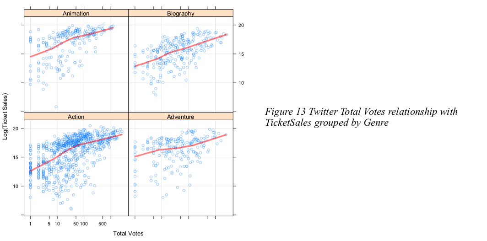

The goal of this project is to analyze how twitters ratings different from IMDB’s ratings among different scales, and most importantly, trying to understand users intentions behind MovieTweeting behaviors. By doing that, we can give film companies intuitions of what type of genres are more likely to become popular in social media, why and when is the best time to do movie propagation,and etc.
Questions
There are 3 major questions that will be answered in this data report.
1) What are the differences between the most popular and loved genres in IMDB and twitter platforms? Do most voted movies usually get higher ratings?
2) Would twitter users more likely to share their reviews(ratings) for old movies or for most recent movies?
3) Do movie exposure to Twitter boost their ticket sales? In other words, analyze the relationship between BoxOffice with total votes and rating scores.
Dataset Introduction
IMDB :
The IMDB dataset will be scraped from OMDB API . The crawled movies will be based the IMDB_ID from online Github Repository The format of the return values from OMDB API will be in json format.
A brief review of the variables and records information in this dataset.
MovieTwitting :
The MovieTwitting dataset can be downloaded directly from here. There are two separate tables used in this research: movies.dat and ratings.dat. There are originally 26,044 records for movies.dat and 649,320 records for ratings.dat.
Analysis and Visualization
Exploration1 : User preferences to Genre - BasicDataExploration:
1) Popular genres in IMDB and twitter are similar. Top 3 genres are in the range of Comedy, Drama and Action.
2) Most highly rated genres in IMDB are Film, Documentary, Biography, Animation and War. While most highly rated genres in Twitter are Western, Short, Documentary, Biography and Film.
- Interesting findings:
1) Documentary and Biography are both being most mentioned and rated high for both IMDB and twitter. Twitter users prefer to share biography movies and IMDB users voted a lot for Documentary.
From this result, we will advise Documentary and Biography movie directors to do movie propagation in twitter before they release.
2) Movie genres that being mentioned more usually not being rated too high.
As we can see from figure 5, we can see Action,Comedy, Drama, Horror in IMDB dataset have large votes audiences, but they receive relatively low rating score. Here, in order to plot ratings and votes on a same y scale, I use log function on IMDB total votes to see a zoom in version.
Exploration 2 : Twitter Ratings time series analysis
In this exploration section, we want to explore the fact whether twitter users are more likely to share their reviews(ratings) for old movies or for most recent movies( Movie release time>1).
As it turns out, twitter users rating behaviors have time effect.
If we search deeper to the genre pattern of twitter rating, we can find that for action movies, their Total Votes have very clear boundaries. Although most people votes for movies in 10 days to 20 days after they release, some people love to share their rating to their preference for classic action movies.
However if we look at Figure 9, biography movies rating time, we cannot see a very obvious patter in here, which means biography movies don’t pursue for time effect. Interesting, we can see lots of biography have ratings before they release. So they must put their trailer on internet before they released and twitter users love to rate them!
So knowing that twitter users rate biography trailers, I was wondering whether this preview version is the reason that make biography get higher score/reputation.
Thus I compared the movies with trailers and movies with trailers and wanna see their average score differences. Turns out, from Table 7, biography movies companies who publish their trailers in advance and receive twitter users’ rating will gain much more higher rating.
From that, we can reasonably guess biography movies reputation have close relationship with their media exposure.
Beside of that, we also curious about how twitter users change their ‘Genre taste’ across time.
From figure 7 we can find some interesting insights. Notice the horror movies are receiving higher and higher ratings through year. And also the same for Action, Comedy and Mystery. While Adventure movie decrease their ratings quite a lot through time. The most steady high performance candidates are Animation and Documentary.
Exploration 3: Movies Exposure in twitter relationship with their BoxOffice performance
Through visualization, it was good to know that twitter votes amounts can have an influence on ticket sales, especially for below genres.
More Code and content about this project, please refer to Here